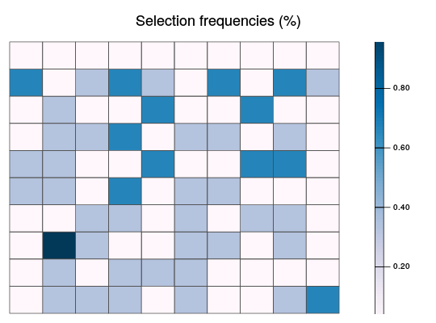
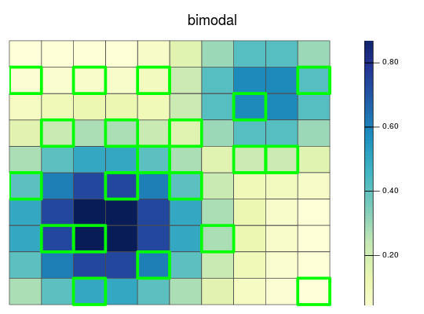

This function plots the distribution of planning units and the distribution of demand points for a particular species in an attribute space. Note that this function only works for attribute spaces with one, two, or three dimensions.
space.plot(x, species, space, ...) # S3 method for RapData space.plot(x, species, space = 1, pu.color.palette = c("#4D4D4D4D", "#00FF0080", "#FFFF0080", "#FF00004D"), main = NULL, ...) # S3 method for RapUnsolved space.plot(x, species, space = 1, pu.color.palette = c("#4D4D4D4D", "#00FF0080", "#FFFF0080", "#FF00004D"), main = NULL, ...) # S3 method for RapSolved space.plot(x, species, space = 1, y = 0, pu.color.palette = c("#4D4D4D4D", "#00FF0080", "#FFFF0080", "#FF00004D"), main = NULL, ...)
RapData, RapUnsolved, or RapSolved object.character name of species, or integer index for species.integer index of attribute space.character name of colors or color palette (brewer.pal) to indicate planning unit statuses. Defaults to c('grey30', 'green', 'black', 'red') which indicate non selected, selected, locked in, and locked out (respectively).character title for the plot. Defaults to NULL and a default title is used.NULL integer 0 to return values for best solution, integer value greater than 0 for y'th solution value.# load RapSolved objects data(sim_ru, sim_rs) # plot first species in first attribute space space.plot(sim_ru, 1, 1)# plot distribution of solutions for first species in first attribute space space.plot(sim_rs, 1, 1)